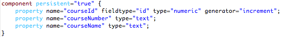
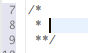
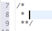
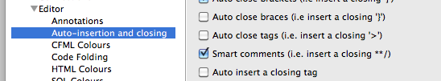
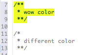

What's New in CFEclipse 1.4.4
Color! There is now some color for cfscript-based components! Also, several wonky color issues have been addressed. Things are far from perfect, but they're much much better, in our humble opinion.
Color
cfscript cfc

scope coloring

"Smart" Comments
line comments
block comments
disabled auto-insert quotes
auto-expansion

auto-closing
 

preference

color style


Source Formatting
ignored tags list
close tags list
cfscript formatting
JavaScript formatting
SQL formatting
CSS formatting
Change log
Tickets
| Closed Tickets | |
| #592 | javascript comments colorization too greedy |
| #605 | hitting enter in blank document sends the editor into limbo |
| #601 | autocompletion : cannot disable function assist, and ordering is incorrect |
| #154 | indent not preserved when replacing selected text with new line |
| #581 | Add option to disable auto indent |
| #582 | files linked via RSE are unmodifiable |
| #583 | newline within tag adds extra indent |
| #586 | it would rock my world if we could have "smart" indenting when entering a newline between { and } |
| #587 | I would love you forever if we could have cfscript comments auto-expand with each newline |
| #588 | the editor needs to know that cfscript components are cfscript code blocks |
| #591 | disable auto-close when in comments |
| #594 | comment mode continuation too eager. |
| #595 | add auto-insert option for when there is only one proposal available |
| #597 | C-Style comment continuation character indent off by one? |
| #598 | add a selection to line comment action |
| #599 | it would be totes awesome if the "selection to line comment" action was bound to M1+/ |
| #600 | disable auto-insert of quotes or apostrophes when in comment blocks |
| #602 | formatting enhancements |
| #603 | formatter needs "close tag" preference |
| #604 | formatter needs "ignored tags" preference |
| #607 | Show hotkey combos for "Collapse All" and "Expand All" in context menu |
| #609 | several context menu items do not display their key binding |